THE DEEP CUTInternet Archive · Music
TRACKLIST
—
Select an album to see tracks.

THE DEEP CUTInternet Archive · MusicSelect an album to see tracks.
// PERSONAL RECORD SHELF
Your saved finds stay in this browser for 14 days.
// LISTENING HISTORY
The last 50 tracks you played, newest first. Kept only in this browser.
// THE PROJECT
Deep Cuts is a small window into the Internet Archive's music collection. Each refresh brings six albums at random, leaving room for unexpected discoveries beyond recommendation feeds.
This page is a draft. A fuller story about the project will be added here later.